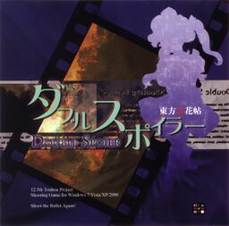

- Welcome to Touhou Wiki!
- Please register to edit. For assistance, check in with our Discord server or IRC channel.
Double Spoiler
| ダブルスポイラー Double Spoiler | |
|---|---|
|
 Double Spoiler official jewel case
| |
| Developer | |
| Publisher | |
| Released |
Full: March 14, 2010 (Reitaisai 7) |
| Genre |
Vertical Danmaku Photography Shooting Game |
| Gameplay |
Single-player Story Mode |
| Platforms | |
| Requirements |
|
Double Spoiler ~ Touhou
Gameplay[edit]
In Double Spoiler, you can play as Aya Shameimaru or, after you unlocked her, Hatate Himekaidou. Like in Shoot the Bullet, the heroines must take pictures of various bosses and their bullet patterns while avoiding them as well. The player gains points for taking certain kinds of pictures, such as getting Aya or Hatate in the shot with the boss, taking pictures of bullets primarily of a single color, or taking pictures while grazing bullets. The player must take all these aspects into account in order to achieve good scores and enable a comment from both. Unlike in the last game, the camera's orientation can be modified: it can be either portrait or landscape, and can be changed during the game. Aya always starts with a landscape orientation, and Hatate with a portrait orientation. The bosses included in this game come from the games Mountain of Faith to Undefined Fantastic Object.
Name and Concept[edit]
Double Spoiler is the sequel to Shoot the Bullet, and it is the second entry in the Touhou Bunkachou (東方文花帖) side series.[1] This is the first Touhou Project title to have Katakana in its name. Interestingly, on the jewel case, the translation of the Katakana word Double Spoiler (ダブルスポイラー) is misspelled as Double Spoier.
This game shares the same concept as its predecessor: you start as Aya Shameimaru and take pictures of a boss character from one of the previous games. Also, a certain amount of "spell card captures" is required to proceed to the next stage. In the previous game, the bare minimum was three spell cards from each stage. This has been changed in this game: the bare minimum requirements decrease as the difficulty of the game increases, making it easier for players to unlock all of the stages.
According to ZUN, the difficulty is set much higher then usual, as people will not discover Touhou with this game. Hence, it is harder to achieve an 'all-clear' in this game.[2]
Story[edit]
Aya Shameimaru, the tengu reporter, runs the "Bunbunmaru Newspaper". She looks for and takes pictures of humans, youkai and any other beings that may be interesting to write about. Another tengu, Hatate Himekaidou, runs the "Kakashi Spirit News", fuelled by her thoughtography. Hatate, wondering why Aya's seemingly ridiculous newspaper is so popular, decides to observe Aya as she gathers her news. This section of the story takes place as the player controls Aya. Upon reaching the Spoiler stage, the two meet, and Hatate declares war on Aya and her newspaper, expressing her disapproval of the tabloid, sensationalist nature of her newspaper. Hatate's journey is represented through the player replaying the game as her, seeing her take on the events Aya has covered.
Music[edit]
The soundtrack of Double Spoiler has six named tracks and one unnamed track. The unnamed track cannot be heard in the music room, and can only be heard when you have unlocked Hatate after clearing the Spoiler stage. Like the other games, the title screen theme of Double Spoiler is an arranged version of "Theme of Eastern Story" from Akyu's Untouched Score vol.5. The fifth photo theme, "The Youkai Mountain ~ Mysterious Mountain" (妖怪の山 ～ Mysterious Mountain), is a slightly different version of Aya's theme in Mountain of Faith, sharing the same name.
According to the music comments, the music changes when the difficulty of the game steps up a notch. ZUN claims that the fifth track, "Bell of Avici ~ Infinite Nightmare" (無間の鐘 ～ Infinite Nightmare), is the one the player will hear the most, describing it as 'an endless hell'. This is because this theme plays during the hardest parts of the game.
Four days after the release of Double Spoiler, Oriental Sacred Place 1 was released, with a CD included. One of the CD's tracks is "Youkai Modern Colony" (妖怪モダンコロニー), which is the full version of song from Double Spoiler, according to ZUN. "Bell of Avici ~ Infinite Nightmare" was also slightly arranged and featured in the 5.5th album of "ZUN's Music Collection", Unknown Flower, Mesmerizing Journey (未知の花 魅知の旅).
Press[edit]
ZUN announced this game on his blog Invisible Games and Japanese on the 3rd of March, 2010, a few days before its full release at Reitaisai 7. [3] To date, no new versions of the game have been released, even though the full version features some notable bugs, especially on spell card 12-6.
English patches[edit]
Touhou Community Reliant Automatic Patcher / THCRAP
- Community translations from the Touhou Patch Center wiki.
- Select lang_en during patching.
- Video walkthrough
- Also available as a pre-packaged standalone (not recommended).
These patches are a community translation based on Touhou Wiki and the English Touhou Patch Center Portal.
Visit the thpatch game page to find the specific patch contents for Double Spoiler.
- http://web.archive.org/web/20141226133601/http://touhou.net/patch/ds_english_patch_v101.rar Alternative English static patch v1.01 at Touhou.net]
See Also[edit]
References[edit]
- ↑ ZUN (3 March, 2010). "東方Project 第12.5弾" (in 日本語). Retrieved August 27, 2011.
今回はおまけ的な扱いだった東方文花帖の第二弾となります。
Check date values in:|date=(help) - ↑ ZUN (3 March, 2010). "東方Project 第12.5弾" (in 日本語). Retrieved August 27, 2011.
＊注、他の作品に比べ（オールクリアの）難易度は高いので、鍛えておいてくださいね。
Check date values in:|date=(help) - ↑ ZUN (3 March, 2010). "東方Project 第12.5弾" (in 日本語). Retrieved August 27, 2011. Check date values in:
|date=(help)